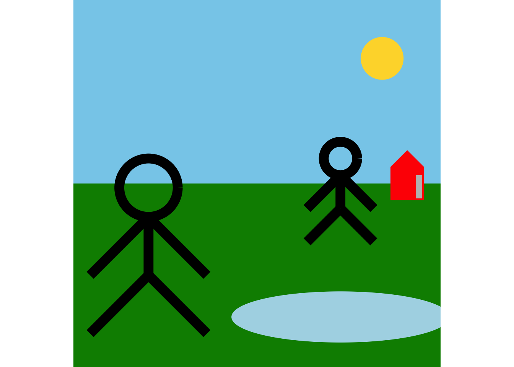

library(tidyverse)
library(stickfiguR)Project 3: stickfiguR
Description
For Project 3, we created a package that allows a user to create and customize their own stick figure paintings. There are a number of functions in this package, each with their own specific inputs to make unique code based art. For the first function, we have created a simple a background function. In this function, we have three different types of land to choose from (Grass, sand, dirt) in addition to two different types of sky colors, such as daylight and night time. This function is initially required as it creates the plot which then can be added on with further layers in ggplot2 with piping. Our main function, “build_stick_figure” gives the user the ability to create a stick figure onto their previous background. Furthermore, they have the choice to move it across the artwork in both the x and y axis. They also have the ability to scale the stick figure if they want to make it bigger. Since this package is utilized in piping, the use can add multiple stick figures and other future objects if they want. The next function we have is the “build_house” function. Here, the user has the ability to pick the color of the house, and still be able to scale and move the house wherever they would like. Next we have the “build_sun_or_moon” function. This function allows you to put either a sun or moon in the sky of the background and similar features to the ones above. The “build_lake” function lets you add a lake and has multiple parameters that let you control it’s size, position, and angle.
Demonstration
build_background(ground = "grass", sky = "day") |>
build_stick_figure(scale = .35, shift_x = -.65, shift_y = -.55) |>
build_stick_figure(scale = .20, shift_x = .5, shift_y = -.15) |>
build_lake(shift_y = -.8, angle = 0) |>
build_house(scale = .20, shift_x = .90, color = "brown") |>
build_sun_or_moon(type= "sun") 